Ausente
Ainda em choque medular. Ainda não dá para saber se a lesão é completa.
Do politraumatizado de colar à tuberculose vertebral: como achar o nível da lesão, separar a dor lombar comum da grave e reconhecer as urgências da coluna.
Organizada a partir da aula e dos slides, com a linguagem ajustada para estudo. A legenda de cores está na página 2.
“Eu nunca vi um na vida, mas vai cair. Então, para vocês não esquecerem, para vocês ficarem com raiva e nunca mais esquecerem, eu vou colocar uma questão de mal de Pott na prova. Já estou avisando.”
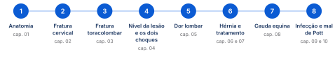
A coluna é uma pilha de tijolos (as vértebras) com amortecedores entre eles (os discos). Ela sustenta o corpo, protege a medula e ainda se mexe. Saber as regiões e as peças ajuda a entender onde cada doença bate.
São 33 vértebras: 7 cervicais, 12 torácicas, 5 lombares, 5 sacrais e 3 a 5 no cóccix (geralmente 4, porque a fusão do cóccix varia de pessoa para pessoa). Para as fraturas, a coluna se divide em cinco regiões:
O corpo vertebral é a principal estrutura de carga e o local mais acometido. Atrás dele, o arco (pedículos e lâminas) fecha o forame vertebral; os forames empilhados formam o canal, com a medula, as meninges e os vasos. O processo espinhoso é ponto de inserção e a referência que se palpa; os transversos recebem músculos e, no tórax, se relacionam com as costelas; os processos articulares formam as articulações zigapofisárias (as facetas), que guiam e limitam o movimento. Doenças podem atingir a lâmina, a faceta, o canal ou o corpo.
A estabilidade não vem só do osso: ligamentos, músculos, cápsula, sinóvia e o próprio formato das peças contam, e cada um pode ser a origem de uma dor.
Quem for para a anestesia vai sentir esses ligamentos na ponta da agulha da raquianestesia: eles são “palpáveis com a agulha”. E qualquer alteração das curvaturas já configura uma doença.
As placas terminais cartilaginosas fazem a ligação com as vértebras e são a porta da nutrição. O disco do adulto é avascular: não entra artéria, ele se nutre por difusão pela placa terminal. Só 1% do volume é de células, e a influência genética pesa muito. Por isso o disco é tão difícil de tratar e não se regenera.
“1, 2”: na periferia (ânulo) é o tipo 1; dentro (núcleo) é o tipo 2.
Quem sofre um trauma grave chega ao hospital de colar cervical. A pergunta do plantão é quando tirar esse colar e quando investigar. A resposta vem do exame físico, e a tomografia é o exame que mais acha fratura.
A distribuição é bimodal: o jovem de 15 a 25 anos, em trauma de alta energia, ou o idoso, em que às vezes basta uma queda simples. A fratura é mais comum nas vértebras de cima, C1 e C2; ali o canal é largo, então mesmo com fragmento dentro do canal a lesão neurológica é menos frequente. A combinação de C1 com C2 pode acontecer. O que mais mata é a dissociação occipitocervical, a lesão entre o côndilo do occipital e C1.
Na cervical subaxial, C6 e C7 concentram 40% das fraturas: são as vértebras mais móveis e menos protegidas, e a carga se transfere para elas. Ali o canal é mais estreito, e a lesão medular é mais frequente.
Mecanismos de trauma:
Todo politraumatizado deve ser considerado portador de lesão cervical. Por isso ele chega do atendimento pré-hospitalar de colar, mesmo acordado. Para tirar: solte devagar, examine os membros superiores e inferiores, pergunte por dor, palpe e aperte. Apertou e não doeu, sem déficit? Pelo protocolo do ATLS (Suporte Avançado de Vida no Trauma), já pode tirar o colar e o colete.
Prancha rígida não é lugar para esperar exame. Sem dor lombar nem cervical, tire da prancha, com movimentação em bloco. Ficar uma ou duas horas num pedaço de madeira esperando a tomografia dói e não ajuda; e a prancha aparece no raio-X. A regra vale também para o colar: com suspeita real, mesmo sem dor, deixe; na dúvida, deixe. Mas o caso raramente é tão em cima do muro.
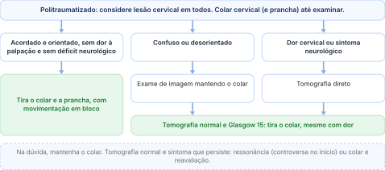
O exame da coluna é muito objetivo: cada raiz tem um músculo-chave, um reflexo e um pedaço de pele.
A dor aparece longe do problema. “Doutor, é um formigamento só no dedão.” Pede-se ressonância da mão, e o problema era uma hérnia cervical. Outro caso: dor forte na face lateral da perna e uma tomografia da perna pedida pelo colega; era topografia de raiz lombar. A dor neurogênica nem sempre vem com dor na coluna. Examine a irradiação antes de pedir exame do lugar errado.
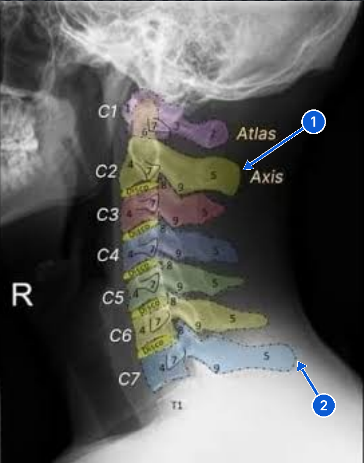
Imagem dos slides da aula.
Na degeneração e na hérnia de disco, o raio-X mais tardio mostra o contrário do alargamento: o espaço do disco afila, porque o disco perde altura.
A tomografia é o exame mais sensível para fratura suspeita ou confirmada e o melhor para ver desvio e padrão da fratura. A fratura nem sempre está no corpo: procure no pedículo, na faceta, na lâmina, no processo espinhoso, translações, luxações e o côndilo do occipital. Olhe tudo no exame.
Indicada no déficit neurológico ou na dúvida sobre o complexo ligamentar posterior, que pesa na decisão de operar. Mostra também compressão e edema da medula, hematoma epidural, estruturas vasculares e a hérnia de disco traumática, aguda, rara, mas possível.
É a fratura especial mais conhecida. Apesar do nome, quase não acontece em enforcados: o mecanismo é hiperextensão com carga axial (o slide cita também a flexão), como no mergulho em água rasa, na queda de cabeça ou no chicote do acidente de carro. A fratura não é no corpo: é nos elementos posteriores do áxis, através da pars interarticular de C2, o ponto de transição para a vértebra de baixo. Por isso também se chama espondilolistese traumática de C2–C3.
Quem decide é o especialista, mas vale saber: o complexo ligamentar posterior íntegro, visto na ressonância, mantém a estabilidade do conjunto.
É a fratura de coluna que mais aparece no plantão comum: o jovem do acidente e o idoso que escorrega e cai sentado. Passa despercebida com facilidade, então é preciso procurar ativamente.
É a fratura de coluna mais comum e a que se vê na unidade básica e no plantão das cidades pequenas; a cervical costuma ser mais grave e vai direto para o hospital terciário. É quatro vezes mais frequente em homens e também bimodal. Sempre que ouvir “bimodal”, pense: jovem com alta energia ou idoso com baixa energia.
O avô caiu sentado e está com dor nas costas? Não fique empurrando com a barriga: leve para examinar, porque pode ser uma fratura toracolombar. O diagnóstico costuma ser tardio: no politraumatizado que não consegue falar (trauma cranioencefálico, intoxicação, confusão) e no idoso que não quer ir ao médico porque “só caiu no quintal”. No paciente que ficou dias na terapia intensiva, procure essas lesões antes de ele acordar; se não der, a anamnese depois já orienta.
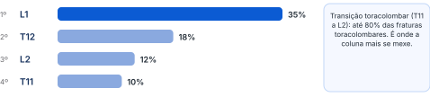
Até 80% das fraturas toracolombares estão na transição T11–L2, o segmento que mais se mexe, e ali também é maior a chance de lesão medular. A ordem: L1, T12, L2, T11. Macete: comece em L1 e vá fazendo os “pulinhos”. Os números podem mudar conforme a população estudada, mas a sequência é essa e cai em prova de residência.
Pode ser um ou mais vetores de força: carga axial (compressão), distração (lesão posterior), flexão e rotação (flexão torcional). O tipo de fratura depende de onde passa o eixo da força em relação à vértebra e da magnitude dela. Os padrões ficam para o especialista.
É comum e vocês vão atender. É a fratura do cinto de segurança de dois pontos (só abdominal): o cinto vira um ponto de apoio na frente do abdome, a inércia joga o tronco para a frente e a coluna dobra como um chicote, em flexo-distração. A lesão óssea vem do impacto indireto na vértebra.
No trauma de alta energia, metade tem lesões fora da coluna: 40% cardiopulmonares, 17% a 20% outras fraturas vertebrais não contíguas, além de lesão intra-abdominal, neurológica e contusão pulmonar. E grande parte das fraturas não é diagnosticada no atendimento inicial.
“Você gasta 30 segundos para palpar tudo no cara: dói aqui? Dói aqui? O cara faz uma fratura exposta do antebraço, você acha que ele está ligando para uma dorzinha lombar? É aí que entra a busca ativa, é aí que vocês têm que colocar o diploma de médico de vocês para trabalhar.”
Lesão neurológica: até 20% têm déficit. Queda, ferimento por arma de fogo e ferimento por arma branca geram mais lesão neurológica. Na lombar, quando acontece, ela é um pouco mais frequente que na cervical. Pelo slide, a maioria das lesões cervicais é incompleta e a maioria das torácicas, completa.
Cuidados pré-hospitalares e protocolo do ATLS. Dentro dele, pense em choque neurogênico: hipotensão com bradicardia, por falta da resposta simpática (capítulo 04). Na avaliação secundária, exame neurológico completo:
Nem toda fratura é escancarada. Às vezes a única pista é uma radiculopatia leve: formigamento no pé, formigamento na coxa. Acenda a luz e procure.
Sempre, sempre, sempre comece pelo raio-X. É rápido, barato, fácil, serve de triagem, e às vezes a fratura vem “como um tapa na cara” quando você já ia pedir transferência para tomografia. A sensibilidade é baixa (52% a 85%) e depende da qualidade da imagem.
Na dúvida, e até para definir o tratamento, quase sempre vai precisar da tomografia: melhor sensibilidade e especificidade para osso, com custo e radiação maiores.
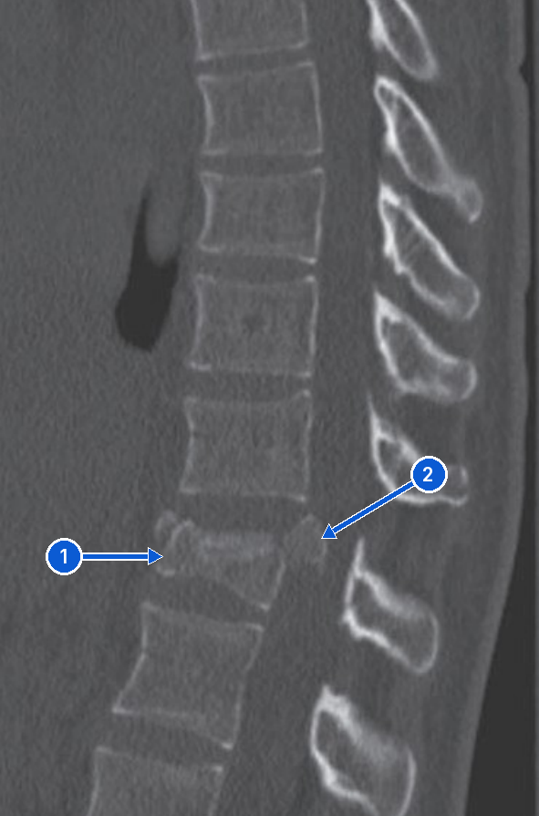
Imagem dos slides da aula.
A ressonância fica para o especialista. Melhor exame para medula, disco e ligamentos, é caro e pouco disponível. Principal indicação: déficit neurológico não explicado pelas lesões, e também o déficit que piora.
Objetivos: estabilidade, corrigir ou evitar deformidade, recuperar o máximo da função neurológica e melhorar a dor. Estabilidade mecânica é a coluna aguentar as cargas do dia a dia sem dor nem deformidade; estabilidade neurológica, aguentar sem lesar nervo; instabilidade é perder uma das duas. Os parafusos servem para isso: a fratura deixa o segmento instável e se faz uma artrodese.
É assunto do ortopedista, mas aluno daqui sai sabendo:
Ângulo e escorregamento do segmento.
O canal só se mede na tomografia.
São também indicações: instabilidade do segmento, lesão neurológica, piora progressiva da função neurológica (indicação absoluta e urgente), redução de fraturas-luxações e descompressão medular. A fixação usa material de síntese: parafuso, haste e artrodese.
A grande maioria, ainda bem, é tratada sem cirurgia.
Essa tabela ele montou na residência, sentado com o chefe, para não ficar perdido quando chegasse às 4 da manhã alguém que caiu e quebrou a coluna. Vale guardar no celular.
Diante de alguém paralisado depois de um trauma, dois mapas dizem a altura da lesão: a pele (dermátomos) e os músculos (miótomos). E há dois “choques” de nomes parecidos que nada têm a ver um com o outro: um é da medula, o outro é da circulação.
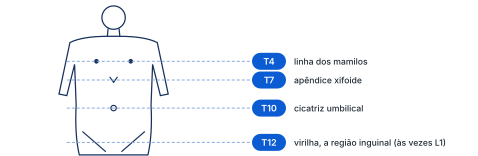
O paciente chega paraplégico. Sente o mamilo? Então a sensibilidade de T4 está preservada e a lesão está daí para baixo. Se sente nos mamilos mas não no apêndice xifoide, a lesão fica entre T4 e T7.
“Eles escrevem um negócio enorme para tentar te confundir e dão uma informação-chave que é basicamente essas quatro linhas aqui. E você mata a questão por causa de um slide. Vai cair. Em algum lugar vai cair.”
Para gravar: comece em L2 e desça a perna; cada movimento é a sequência do anterior.
É clássico de questão de residência tentar misturar os dois. Choque medular é problema neurológico; choque neurogênico é problema circulatório. O neurogênico está na categoria dos choques, junto com o hipovolêmico e o anafilático, da disciplina de emergência.
Choque medular: a energia do trauma despolariza de uma vez todos os axônios; os neurotransmissores se esgotam e, daquele segmento para baixo, nada dispara. Por isso a paralisia é flácida e sem reflexos. É temporário: em 24 a 48 horas as vesículas se reabastecem e os reflexos voltam, podendo surgir depois hiper-reflexia e espasticidade.
Choque neurogênico: sem o simpático, a pressão cai, mas a frequência não sobe para compensar, porque há bloqueio neurológico. O paciente está com pressão de 9 por 6 e 50 batimentos por minuto, quente, corado, com diurese normal: parece bem, mas está morrendo. Pode haver hipotermia. Tratamento: soro, soro, soro.
A questão põe os dois juntos para confundir. “Taquicárdico, extremidades frias, diurese baixa: é choque neurogênico?” Não: bradicardia, extremidade quente e diurese normal é que apontam o neurogênico. Os dois choques podem coexistir no politraumatizado, e diante de hipotensão após trauma o primeiro a excluir é o choque hemorrágico, de longe a causa mais comum.
“Uma coisa é uma coisa, outra coisa é outra coisa. Choque medular não tem nada a ver com choque neurogênico, mas eles vão tentar embananar vocês.”
Aperta-se a glande ou o clitóris (ou se traciona a sonda vesical, se o paciente já está sondado) e o esfíncter anal contrai. É o divisor de águas do paciente paralisado da cintura para baixo.
Ainda em choque medular. Ainda não dá para saber se a lesão é completa.
Acabou o choque medular. O déficit que sobrou é a lesão real.
Presente: o problema é a circulação, não o reflexo.
Dor nas costas é uma das queixas mais comuns da medicina e quase sempre melhora sozinha. O trabalho do médico é examinar antes de olhar exames, procurar os sinais de alerta e não transformar uma dor comum em doença para a vida toda.
A dor lombar baixa fica entre T12 e a crista ilíaca e pode irradiar para o quadril e as faces lateral e anterior da coxa. Para separar o arroz do feijão: dói nas costas? Corre para a perna? Na frente ou atrás? Na frente, pense numa hérnia alta (lembre dos dermátomos). Atrás, é lombociatalgia: raízes do ciático lá em cima ou uma compressão baixa.
Síndrome do piriforme. O piriforme é um músculo pequeno (o tendão tem cerca de 1 centímetro) atrás do trocânter, e o ciático passa sob ele. Encurtamento, hipertrofia ou, muito raro, um tumor comprimem o nervo de fora da coluna e tudo formiga. A ressonância mostra um monte de coisa, opera-se uma hérnia lombar, e bastava fisioterapia de alongamento.
É a segunda causa de consulta ao generalista (só perde para os sintomas respiratórios) e a primeira ao ortopedista: no consultório de quadril dele, 20% a 30% dos pacientes vêm por dor lombar. É a principal síndrome dolorosa da coluna, seguida da cervicalgia, provavelmente porque andamos em pé há pouco tempo na evolução. É a segunda doença crônica mais prevalente no Brasil, atrás da hipertensão (18,5% dos adultos), e a maior causa de falta ao trabalho no mundo, com custos indiretos de 100 bilhões de dólares nos Estados Unidos. A recorrência em um ano é de 20% a 44%, e de 72% ao longo da vida.
Fatores de risco para dor lombar: obesidade (índice de massa corporal acima de 30), sedentarismo, tabagismo, trabalho braçal, insatisfação com o trabalho, nível educacional e econômico, ansiedade, depressão, estresse, fibromialgia e tendência à cronicidade.
“Trabalhei a vida inteira de pedreiro, carregando saco de cimento. Por isso tenho hérnia?” Carregar peso é fator de risco para dor. O que lesa o disco diretamente são só duas coisas: genética (“defeito de fábrica”) e tabagismo. E nem todo mundo com hérnia tem dor, nem toda dor lombar é por hérnia.
A primeira grande questão do paciente com dor lombar é o lado psíquico: muitos somatizam tudo, e com fibromialgia tudo dói. É difícil examinar e difícil achar a origem da dor, e é isso que torna o tratamento tão trabalhoso.
Cerca de 85% melhoram sozinhos em uma semana, sem fazer nada, e só 1% precisa de cirurgia: a cada 100 pacientes, um será operado, por sintoma que persiste ou por achado com correlação clínico-radiológica. O quadro costuma ser autolimitado, muitos nem procuram médico, e raramente incapacita para sempre; mas 40% voltam a ter dor em 6 meses, e vira um problema crônico com crises intermitentes.
Hérnia em L1 com dor em L5 não é indicação de cirurgia: é dissociação clínico-radiológica, e provavelmente a dor não vem dali. A boa notícia é que o exame da coluna é objetivo: “Doutor, está queimando a minha coxa”? É L3 até que se prove o contrário. Os exames servem para o “cara-crachá” com a clínica.
“Examina o paciente primeiro, faz a anamnese bonitinho e cria a tua própria hipótese. Aí você pega o exame e olha. Se você olhar o exame antes, você vai entrar na linha de raciocínio do outro e vai procurar o que o exame está te mostrando.”
Muito jovem com dor lombar incapacitante (não uma dorzinha): abra o olho. Cinquenta e poucos anos e a primeira dor nas costas da vida: estranho, faça pelo menos um raio-X. A coluna também tem tumor: o paciente com câncer de pulmão que nem sabia da doença vai ao médico pela primeira vez por uma dor nas costas, e o raio-X mostra a metástase.
Dermátomos, miótomos, movimentos e força. A dor muscular é comum, mas inespecífica, e geralmente não se reproduz no exame. A contratura paravertebral (os eretores da espinha) não sugere nenhuma doença específica, mas ajuda a acompanhar a fisioterapia.
O teste de Lasègue é talvez o principal exame físico para diferenciar lá no começo. Com o paciente deitado, eleve a perna estendida: isso estira o ciático passivamente. É positivo quando aparece irradiação, choque ou formigamento a partir de 30 a 40 graus. Não é dor: é sintoma neurológico de raiz estirada. O sinal cruzado (a dor aparece na perna doente quando se eleva a outra) é altamente específico.
“Ai!” com a perna mal levantada não é Lasègue. Faça no colega: atrás da coxa vai doer, porque todo mundo é encurtado. Positivo é a irradiação a partir de 30 a 40 graus, não a dor.
O leque muda com o sexo e a idade. Nos homens, predominam as lombalgias mecânicas, o desgaste, as espondiloartrites e os tumores. Nas mulheres, osteoporose (que não dói, mas precede a fratura), doenças endócrinas e quadros musculares, como fibromialgia e dor miofascial, além do componente psicológico.
Câncer prévio ou na família, idade acima de 55 ou abaixo de 20, perda de peso, dor por mais de 4 a 6 semanas, em repouso, noturna, que não melhora com analgesia nem com 1 mês de tratamento, tabagismo.
Trauma, queda sentado, corticoide (pela osteoporose), idade acima de 50 anos, osteoporose.
Discite, osteomielite, abscesso epidural. Febre, droga endovenosa, infecção respiratória, urinária ou de pele, imunossupressão, diabetes, tuberculose, dor em repouso.
A tabela do slide mostra o peso de cada grupo de causas:
Os critérios de Waddell ajudam a reconhecer o paciente que, por exemplo, só quer um atestado. São sinais de doença não orgânica:
Com 3 ou mais, considere uma causa psicossocial; eles também preveem mau resultado de cirurgia. Por trás pode estar o ganho secundário: atestado, afastamento, aposentadoria. Quem não volta ao trabalho em 6 meses tem menos da metade de chance de voltar; depois de 1 ano afastado, menos de um quarto volta, e a vida vira laudo e benefício até a aposentadoria.
O raio-X fica para a segunda consulta, quando não melhorou, ou para quem tem sinal de alerta: idade acima de 50, trauma significativo, déficit neurológico, perda de peso, drogas ou álcool, câncer, corticoide, febre, visita recente (menos de 1 mês) pelo mesmo problema sem melhora e paciente buscando compensação trabalhista. Por que não sempre? 73% das vezes está normal, 46% dos achados alterados são incidentais e a correlação com os sintomas é baixa: não precisa irradiar todo mundo.
Ressonância e tomografia são equivalentes para hérnia de disco e estenose do canal. A ressonância é mais sensível para tumor, infecção e fratura, porque mostra o edema ósseo.
Cem por cento das ressonâncias de coluna lombar depois dos 50 anos têm alguma alteração (na cervical, 60% depois dos 60). É questão da prova de título de especialista em ortopedia. O laudo cheio de achados faz achar que o problema está ali, quando muitas vezes é uma lombalgia mecânica, um mau jeito, que resolveria com cinco dias de anti-inflamatório. Correlacione com a clínica: o uso sem critério leva a sobretratamento, cirurgias desnecessárias e a um paciente que passa a se ver como doente crônico e incurável.
Na hérnia de disco, o miolo do disco escapa pela parede e aperta uma raiz nervosa. A dor costuma ser pior na perna do que nas costas, e o tamanho da hérnia na imagem não diz quanto o paciente sente.
Mais de 95% das hérnias lombares estão em L4–L5 ou L5–S1: lá embaixo ficam as zonas de transição mais móveis e o maior peso (L4–L5 carrega pelo menos três vértebras a mais que L1–L2). A dor lombar piora com a flexão, irradia para a perna abaixo do joelho e melhora com repouso. Muitas vezes a dor da perna é pior que a das costas: “Doutor, arranca a minha perna, que eu não aguento mais”. A dor está na raiz acometida, e a lombar é só um desconforto.
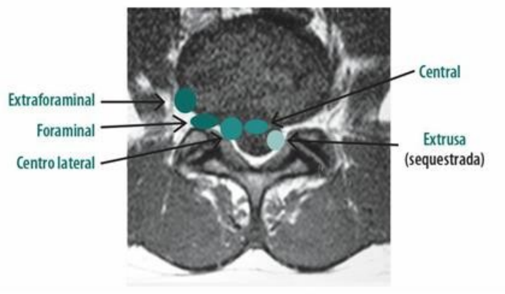
Imagem dos slides da aula (ressonância em corte axial).
Genética e ambiente. Com a idade, o disco perde proteoglicanos (o gel) e água. As fibras do ânulo carregam carga de tração: são duras e rompem mais fácil, em microrrachaduras por compressões repetidas. O material do núcleo que chega ao canal provoca uma resposta inflamatória importante.
É mais fácil destruir uma esponja apertando ou trincar um vidro? O vidro é mais resistente, mas quebra inteiro quando passa do limite. O osso é igual: o da criança é mais mole e enverga sem quebrar; o do adulto, como o vidro, passou da tensão máxima, quebra.
Vale na cervical e na lombar: dói a coluna? Na frente? Atrás? Passa do joelho?
Dor inespecífica: manguito rotador ou contratura cervical no braço; quadril, artrose ou fratura na perna.
Muito provavelmente sintoma neurológico: a dor radicular passa do cotovelo e do joelho.
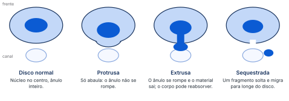
“Essa aqui eu vou pôr na prova, me lembrem depois.”
Não há correlação entre o tamanho da hérnia e a clínica. É uma questão de conteúdo e continente. Num auditório grande, cem pessoas ficam apertadas, mas cabem; mil não cabem. Numa salinha de 2 por 2 metros, uma pessoa só sobra espaço. Uma hérnia volumosa que só chega à primeira cadeira não atrapalha ninguém; uma que vai até a porta, sim.
Hérnia pequena pode dar dor intensa e incapacitante; hérnia grande pode não dar nada. E também não é regra: hérnia grande pode doer muito.
A maioria melhora com remédio em ciclo curto, movimento cedo e uma conversa honesta sobre o que esperar. Procedimentos e cirurgia ficam para poucos, depois de meses sem resposta.
Anti-inflamatório mais relaxante muscular, de horário, num ciclo de 3, 5 ou 7 dias. A inflamação tem tempo marcado: 7 a 10 dias de fase inflamatória, depois reparação e remodelamento. É nessa fase que o remédio atua. Atenção a efeitos colaterais e contraindicações, principalmente nos idosos, que “não têm rim”.
“Tomar se precisar” não é tratamento. Receite o ciclo completo. E não demonize o anti-inflamatório: 3 a 5 dias não fazem mal. Para o avô: “Não é para tomar 57 dias seguidos esse remédio. É 5, acabou!”
O paciente acha que três dias de remédio vão zerar a dor para sempre. Pergunte o que ele espera: resolver a dor? melhorar um pouco? O tratamento muitas vezes é multidisciplinar. Na cirurgia, nem se fala: mesmo operados, muitos melhoram 70% a 80% e ficam com uma dor residual; quem prometeu 100% ganha um paciente furioso, que voltou a andar e jogar mas “ainda sente uma dorzinha”.
“Trabalhem a expectativa do paciente, apresentem riscos, apresentem benefícios e perguntem: o que você acha que vai acontecer se você operar? Você quer melhorar quanto?”
O fluxograma é para deixar na cabeceira da cama:
Analgésico simples, de horário.
Anti-inflamatório, ou um seletivo da cicloxigenase 2 (etoricoxibe, celecoxibe).
Anti-inflamatório mais um opioide fraco.
Evite anti-inflamatório em idoso, em quem tem história de úlcera péptica, insuficiência renal crônica ou usa anticoagulante (risco de sangramento).
Entre todos os anti-inflamatórios, o de maior potência analgésica é o diclofenaco, à frente do etoricoxibe e do celecoxibe.
É exceção e pouco efetivo sem radiculopatia: infiltração das facetas, epidural ou de pontos-gatilho, injeção de agentes esclerosantes, ablação por radiofrequência da inervação das facetas. Deixe para o especialista, mas conheça.
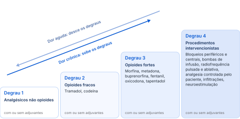
Na dor crônica, sobe-se degrau por degrau; na dor aguda, começa-se pelo degrau da intensidade da dor e desce-se à medida que ela cede. Em todos os degraus cabem adjuvantes.
Nada melhorou depois de 3 a 6 meses: cirurgia. Tira-se a hérnia, amplia-se o canal, corrige-se o que a doença deformou e fixa-se com artrodese. Para a artrodese por degeneração lombar, o slide pede cautela:
No fim da medula, as raízes descem soltas como um rabo de cavalo. Se algo aperta várias de uma vez, o paciente perde a sensibilidade do períneo e o controle da bexiga e do intestino. É emergência: quanto antes descomprimir, menos sequela.
É a compressão das raízes lombares, sacrais e coccígeas que formam a cauda equina (o nome vem do formato de rabo de cavalo). A medula termina em L1–L2 no adulto, no cone medular; abaixo dele, só raízes descem pelo canal. A crista ilíaca fica mais ou menos nessa altura, e por isso o anestesista a palpa e punciona logo abaixo: dali para baixo não há medula.
É uma emergência cirúrgica: o atraso na descompressão deixa sequelas permanentes, como disfunção da bexiga, do intestino e sexual, alterações de sensibilidade e dor crônica.
Lombalgia aguda, em geral intensa, irradiada para uma ou as duas pernas; alterações motoras conforme as raízes.
Parestesia e hipoestesia nas pernas. Anestesia em sela: períneo, genitais e região perianal. Pode ser assimétrica.
Dificuldade para iniciar a micção, retenção ou perda do controle urinário e intestinal, disfunção sexual.
A cauda equina tem de ser pesquisada ativamente e registrada em todo atendimento de dor lombar. Deixe um modelo salvo e vá só alterando:
“Lombalgia. Nega anestesia em sela. Nega alteração urinária e intestinal. Sem déficit geniturinário.” Pergunte: “Xixi e cocô estão normais? A sensibilidade aqui está normal?”
“Escreve no prontuário! Escreve em todos, em todos! Porque se você esquecer em um, ele é o cara que tinha cauda equina e você não viu.”
É uma das poucas situações que tiram o ortopedista de casa na hora: cauda equina e luxação do joelho (do joelho, não da patela). No resto, o ortopedista é o último a mexer no politraumatizado. E vale o mesmo cuidado de registro de outras queixas, como na entorse do tornozelo: anotar a base do quinto metatarso e a cabeça da fíbula.
Cirurgia de coluna raramente é imediata, mas há esse tempo para agir.
A coluna também infecta, quase sempre por uma bactéria que chega pelo sangue a partir de outro foco. Os sintomas enganam, o raio-X demora a mostrar, e a ressonância é o melhor exame.
A infecção da coluna é menosprezada e muitas vezes insidiosa. Não é só osteomielite: a espondilodiscite reúne a osteomielite vertebral, a espondilite e a discite (meningite e aracnoidite ficam com a neurologia). É a manifestação mais comum da osteomielite hematogênica em adultos: não é o tiro nas costas que infectou, é o paciente que teve endocardite, pneumonia ou tuberculose.
O quadro é inespecífico: lombalgia, febre (em metade dos casos), dificuldade para andar, sentar ou ficar em pé, dor abdominal (o processo se estende ao retroperitônio) e até sinais meníngeos.
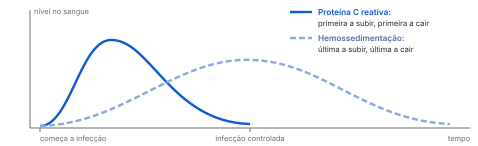
Na infecção que começou hoje, a proteína C reativa já pode estar alta e a hemossedimentação ainda normal; quando a infecção se resolve, a hemossedimentação ainda fica alta por um tempo. Também é pergunta de prova de residência.
Toda questão sobre infecção em paciente com anemia falciforme quer a resposta Salmonella; toda questão com usuário de droga endovenosa quer Pseudomonas. E o paciente com discite que só piora com meropeném, piperacilina com tazobactam ou ceftriaxona? Pesquise imunossupressão (às vezes é vírus da imunodeficiência humana sem diagnóstico): pode ser fungo.
“Se escuta barulho de casco, você pensa em cavalo ou em zebra? Cavalo, mas pode ser zebra. Não inventem demais, mas saibam que pode acontecer. Nunca digam ‘nunca’ nem ‘sempre’ na medicina.”
Objetivos: eliminar a infecção, restaurar e preservar a função da coluna e aliviar a dor. O tratamento conservador é antibiótico (por boca ou endovenoso) com fisioterapia e imobilização, em equipe: infectologista, fisioterapeuta, nutricionista, dentista. A cirurgia entra na compressão de estruturas nervosas, na instabilidade, na cifose grave, na falha do tratamento conservador e no abscesso epidural.
Infecção de dente também se espalha pelo sangue. Os cirurgiões de quadril e de joelho têm medo do tratamento de canal: a bactéria pode sair do dente e parar na prótese recém-colocada. É raro, mas é uma causa possível.
A tuberculose pode atacar a coluna: destrói as vértebras, mas poupa o disco, forma abscesso e pode deixar o paciente corcunda e paralisado. É a pergunta preferida das provas, e vai estar na desta disciplina.
A tuberculose é a principal causa de espondilodiscite no mundo. De 1% a 3% dos infectados pelo Mycobacterium tuberculosis têm acometimento de ossos e articulações, e metade destes, na coluna. A rigor, tuberculose da coluna é a infecção; mal de Pott é a síndrome: todo mal de Pott é tuberculose na coluna, mas nem toda tuberculose na coluna chega a mal de Pott. Os dois nomes acabaram se misturando.
Não brigue com a questão. Quem escreveu a prova de residência nem sempre sabe a diferença. Falou em mal de Pott, trate como sinônimo de tuberculose na coluna.
A tuberculose da coluna preserva o disco intervertebral. Se a questão fala em acometimento do disco, não é tuberculose. É uma das principais características e cai em todas as provas de residência. O segmento mais comum é o toracolombar, de transição, e a incidência é igual em homens e mulheres.
A coluna colapsa e encurva.
Com o bacilo dentro.
Pode chegar à paraplegia.
É o fim da linha da doença. Antigamente o diagnóstico demorava tanto que todos chegavam assim, e a definição ficou. Hoje se sabe que pode haver paraplegia secundária à tuberculose, tuberculose atípica, e que tuberculose não é igual a mal de Pott.
“Não tem como ficar mais fácil que isso: cadê o Pott? Cifose, abscesso, déficit neurológico. Vai cair. Estou avisando.”
Sintomas insidiosos e indolentes, constitucionais e progressivos, dor inespecífica, febre noturna: tudo o que a tuberculose causa, e a coluna também acometida. O laboratório é de doença crônica: o slide traz hemossedimentação e proteína C reativa baixas e anemia sem explicação. A cultura, com o bacilo, dá o diagnóstico definitivo.
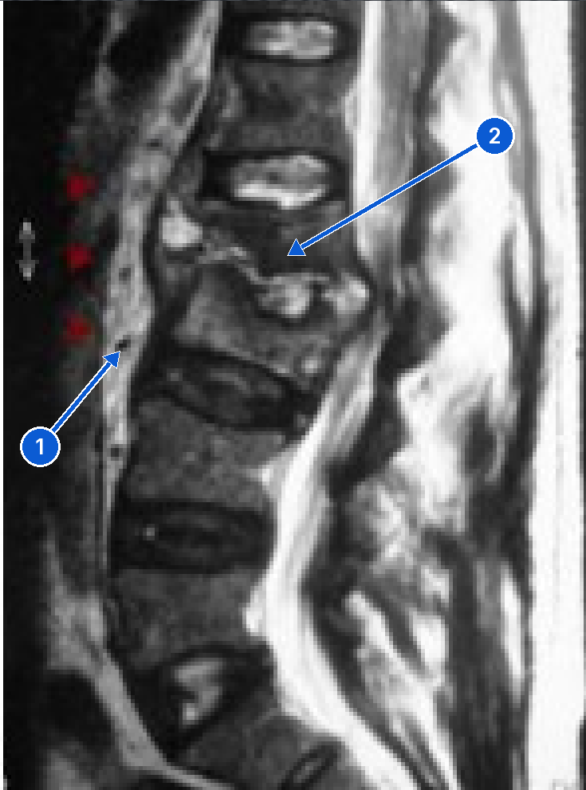
Imagem dos slides da aula (ressonância).
Em geral, não cirúrgico, com o esquema RIPE: rifampicina, isoniazida, pirazinamida e etambutol (o slide cita a estreptomicina ao lado do etambutol).
No imunocomprometido, até 2 anos.
Cirurgia: falha do tratamento com remédios; dor por instabilidade do segmento; mais de 4 níveis acometidos (o risco de colapso é maior); abscesso, porque antibiótico não trata abscesso, abscesso se drena; e o mal de Pott, a soma de todas as complicações.
Todos os pontos marcados com PROVA, na ordem da aula.
Colar cervical: todo politraumatizado tem lesão cervical até examinar. Acordado, sem dor e sem déficit: tira. Confuso: imagem com o colar. Dor ou sintoma: tomografia. Tomografia normal e Glasgow 15: tira, mesmo com dor.
Tomografia é o exame mais sensível para fratura de coluna.
Toracolombar: L1 (35%), T12 (18%), L2 (12%), T11 (10%); até 80% em T11–L2.
Chance: cinto de dois pontos, flexo-distração; associa lesão abdominal (45%), não neurológica; só óssea, conservador.
Operar a toracolombar: cifose acima de 30°, translação acima de 2,5 mm, perda de altura acima de 50%, canal reduzido acima de 30%; piora neurológica progressiva é absoluta e urgente.
Dermátomos: T4 mamilos, T7 apêndice xifoide, T10 umbigo, T12 virilha.
Miótomos: L2 flexão do quadril, L3 extensão do joelho, L4 dorsiflexão do tornozelo, L5 extensão do hálux, S1 flexão plantar.
Choque medular é neurológico: paralisia flácida, sem reflexos, 24 a 48 horas. Choque neurogênico é circulatório: hipotensão com bradicardia, extremidades quentes, diurese normal; trata com soro.
Bulbocavernoso: ausente no choque medular; a volta do reflexo marca o fim do choque medular.
Lasègue: positivo com irradiação a partir de 30 a 40 graus; não é dor, é sintoma de raiz.
Ressonância lombar: 100% têm alteração depois dos 50 anos. Correlacione com a clínica.
Dor que passa do joelho (ou do cotovelo) é radicular até prova em contrário.
Tamanho da hérnia não se correlaciona com a dor: conteúdo e continente.
Diclofenaco é o anti-inflamatório de maior potência analgésica.
Cauda equina: anestesia em sela e esfíncteres registrados em toda dor lombar; emergência cirúrgica, descompressão idealmente em 48 horas.
Germes: Salmonella na anemia falciforme; Pseudomonas no usuário de droga endovenosa; Staphylococcus aureus é o mais comum.
Proteína C reativa: primeira a subir e a cair. Hemossedimentação: última a subir e a cair.
Tuberculose da coluna preserva o disco. Segmento toracolombar; homens e mulheres por igual.
Cadê o Pott: cifose, abscesso, déficit neurológico. RIPE por 6 a 9 meses (18 a 24 no imunocomprometido).